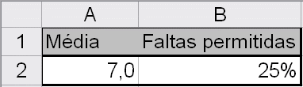
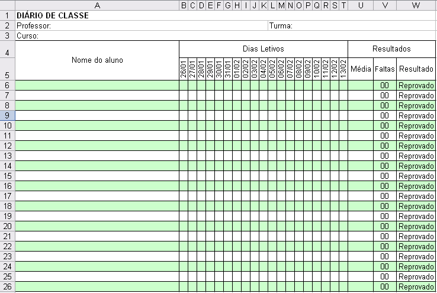

CENTRO DE EDUCAÇÃO PROFISSIONAL SEBASTIÃO DE SIQUEIRA
Excel Avançado
Crie um modelo de diário de classe com as seguintes características:
O diário deve conter linhas para adicionar os nomes dos alunos, e colunas com as datas das aulas.
Utilize a validação para permitir apenas os valores P ou F nos campos reservados à presença do aluno. Não utilize listas suspensas.
Após as colunas que indicam a presença ou falta do aluno em um determinado dia, inclua uma coluna que represente o total de faltas dos alunos.
Crie uma fórmula que calcule a quantidade de faltas do aluno. Dica: utilize a função CONT.SE()
Considerando que uma outra planilha, na mesma pasta de trabalho contém as informações ilustradas abaixo, elabore uma fórmula que verifique se o aluno foi aprovado ou reprovado.

